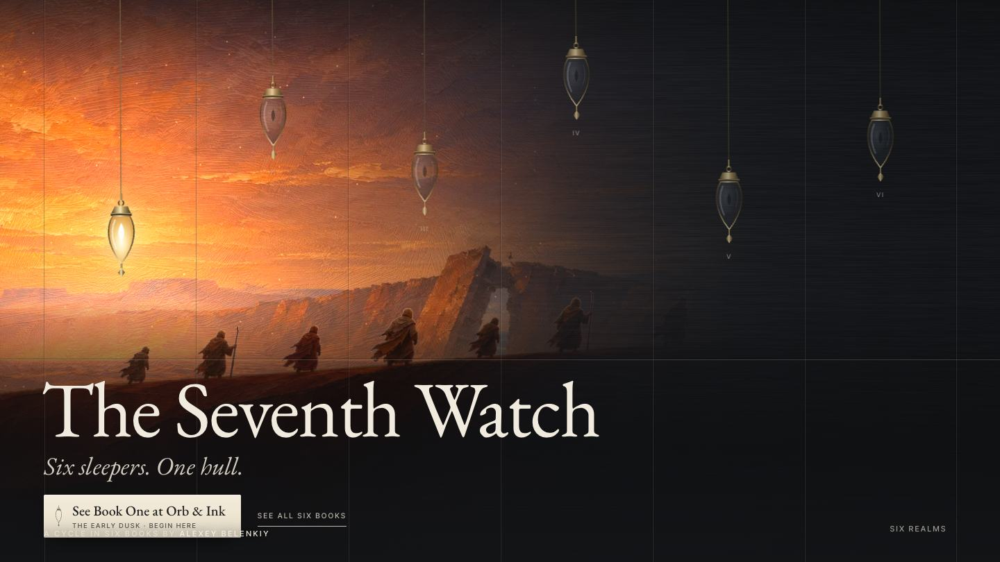
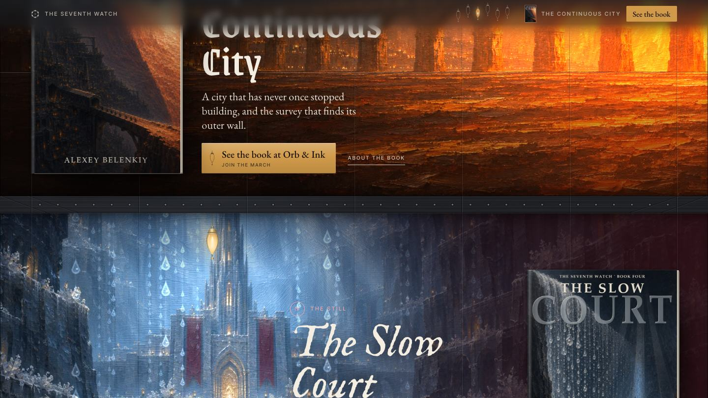
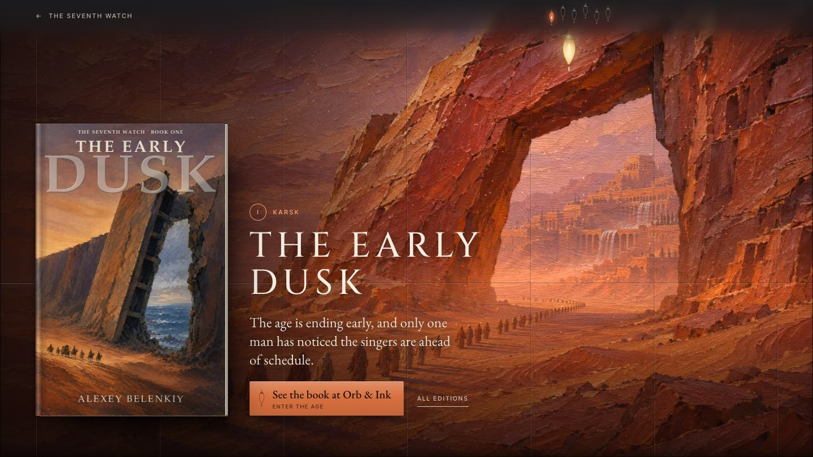
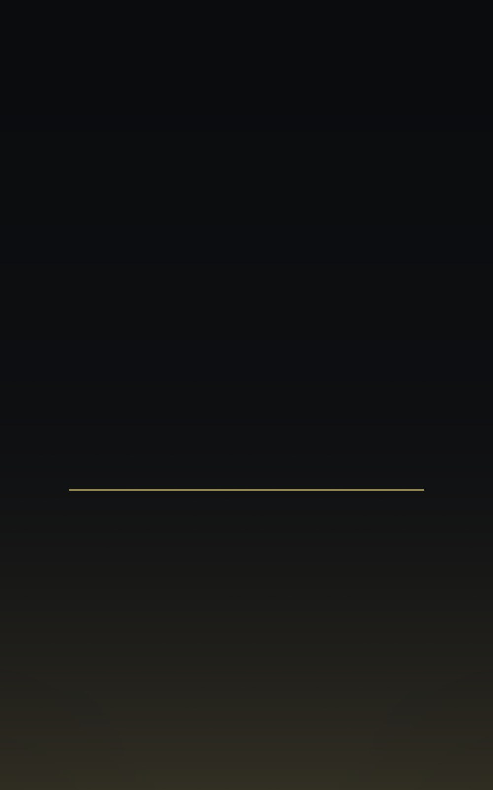

The Early Dusk
Весперы пришли отпеть эпоху — на тысячу лет раньше срока.
Шесть цивилизаций живут циклами — пробуждаются, строят, завоёвывают, приходят в упадок и засыпают под пение незнакомцев в рясах, — и каждая верит, что Колесо есть естественный порядок мира.



The Seventh WatchИсследовать этот мирКниг: 6
Весперы пришли отпеть эпоху — на тысячу лет раньше срока.

Море падает — на ладонь в год, потом быстрее. Кто-то забирает воду.

Рассвет здесь — стена огня, вечно обходящая мир. Жизнь есть только в идущей ночи.

Девять дней при дворе обойдутся посольству в три года войны снаружи.

Все вахты бодрствуют разом — впервые за всё плавание. Осада — это закрытый вентиль. Голод — это подпись.

Небесная твердь рвётся по шву — и над Краевыми горами всех царств разом встаёт новая галактика.
The Seventh Watch
Алексей Беленький
Открой книгу — внутри целый мир.
Открыть полку · 43